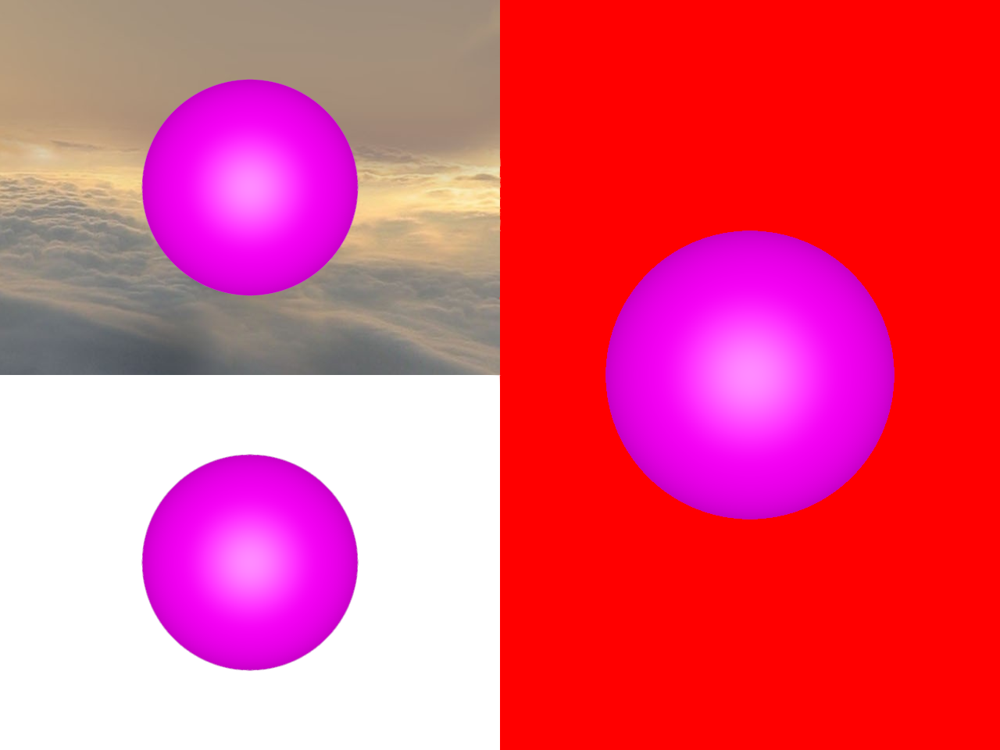

Note
Go to the end to download the full example code.
Multi Screen Example#
This example demonstrates how to create a multi-screen setup using FURY’s ShowManager and Scene classes.
import numpy as np
from fury.window import ShowManager, Scene
from fury.actor import sphere
from fury.data import read_viz_cubemap, fetch_viz_cubemaps
from fury.io import load_cube_map_texture
Let’s fetch a skybox texture from the FURY data repository.
fetch_viz_cubemaps()
Creating new folder /home/runner/.fury/cubemaps
Downloading "skybox-nx.jpg" to /home/runner/.fury/cubemaps
Download Progress: [######--------------] 29.39% of 0.05 MB
Download Progress: [############--------] 58.77% of 0.05 MB
Download Progress: [##################--] 88.16% of 0.05 MB
Download Progress: [####################] 100.00% of 0.05 MB
Downloading "skybox-ny.jpg" to /home/runner/.fury/cubemaps
Download Progress: [######--------------] 31.39% of 0.05 MB
Download Progress: [#############-------] 62.78% of 0.05 MB
Download Progress: [###################-] 94.16% of 0.05 MB
Download Progress: [####################] 100.00% of 0.05 MB
Downloading "skybox-nz.jpg" to /home/runner/.fury/cubemaps
Download Progress: [######--------------] 30.02% of 0.05 MB
Download Progress: [############--------] 60.04% of 0.05 MB
Download Progress: [##################--] 90.06% of 0.05 MB
Download Progress: [####################] 100.00% of 0.05 MB
Downloading "skybox-px.jpg" to /home/runner/.fury/cubemaps
Download Progress: [#####---------------] 27.28% of 0.06 MB
Download Progress: [###########---------] 54.57% of 0.06 MB
Download Progress: [################----] 81.85% of 0.06 MB
Download Progress: [####################] 100.00% of 0.06 MB
Downloading "skybox-py.jpg" to /home/runner/.fury/cubemaps
Download Progress: [#################---] 83.45% of 0.02 MB
Download Progress: [####################] 100.00% of 0.02 MB
Downloading "skybox-pz.jpg" to /home/runner/.fury/cubemaps
Download Progress: [######--------------] 27.83% of 0.06 MB
Download Progress: [###########---------] 55.66% of 0.06 MB
Download Progress: [#################---] 83.50% of 0.06 MB
Download Progress: [####################] 100.00% of 0.06 MB
Files successfully downloaded to /home/runner/.fury/cubemaps
({'skybox-nx.jpg': ('https://raw.githubusercontent.com/fury-gl/fury-data/master/cubemaps/skybox-nx.jpg', '12B1CE6C91AA3AAF258A8A5944DF739A6C1CC76E89D4D7119D1F795A30FC1BF2'), 'skybox-ny.jpg': ('https://raw.githubusercontent.com/fury-gl/fury-data/master/cubemaps/skybox-ny.jpg', 'E18FE2206B63D3DF2C879F5E0B9937A61D99734B6C43AC288226C58D2418D23E'), 'skybox-nz.jpg': ('https://raw.githubusercontent.com/fury-gl/fury-data/master/cubemaps/skybox-nz.jpg', '00DDDD1B715D5877AF2A74C014FF6E47891F07435B471D213CD0673A8C47F2B2'), 'skybox-px.jpg': ('https://raw.githubusercontent.com/fury-gl/fury-data/master/cubemaps/skybox-px.jpg', 'BF20ACD6817C9E7073E485BBE2D2CE56DACFF73C021C2B613BA072BA2DF2B754'), 'skybox-py.jpg': ('https://raw.githubusercontent.com/fury-gl/fury-data/master/cubemaps/skybox-py.jpg', '16F0D692AF0B80E46929D8D8A7E596123C76729CC5EB7DFD1C9184B115DD143A'), 'skybox-pz.jpg': ('https://raw.githubusercontent.com/fury-gl/fury-data/master/cubemaps/skybox-pz.jpg', 'B850B5E882889DF26BE9289D7C25BA30524B37E56BC2075B968A83197AD977F3')}, '/home/runner/.fury/cubemaps')
The following function returns the full path of the 6 images composing the skybox.
texture_files = read_viz_cubemap("skybox")
Now that we have the location of the textures, let’s load them and create a Cube Map Texture object.
cube_map = load_cube_map_texture(texture_files)
The Scene object in FURY can handle cube map textures and extract light
information from them, so it can be used to create more plausible materials
interactions. The skybox parameter takes as input a cube map texture and
performs the previously described process.
scene0 = Scene(skybox=cube_map)
scene1 = Scene(background=(1, 1, 1, 1))
scene2 = Scene(background=(1, 0, 0, 1))
Let’s create three different sphere actors to add to respective scenes. Note: Adding same actor to multiple scenes will not work and only add to the last scene that got the actor added to it.
sphere_actor0 = sphere(
np.zeros((1, 3)),
colors=(1, 0, 1, 1),
radii=15.0,
phi=48,
theta=48,
)
sphere_actor1 = sphere(
np.zeros((1, 3)),
colors=(1, 0, 1, 1),
radii=15.0,
phi=48,
theta=48,
)
sphere_actor2 = sphere(
np.zeros((1, 3)),
colors=(1, 0, 1, 1),
radii=15.0,
phi=48,
theta=48,
)
scene0.add(sphere_actor0)
scene1.add(sphere_actor1)
scene2.add(sphere_actor2)
show_m = ShowManager(
scene=[scene0, scene1, scene2],
title="FURY Multi Screen Example",
screen_config=[2, 1],
)
show_m.start()

Total running time of the script: (0 minutes 3.176 seconds)